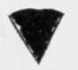

How To Make A Fishing Rod. Part 3
Description
This section is from the book "American Game Fishes", by W. A. Perry. Also available from Amazon: American Game Fishes: Their Habits, Habitat, and Peculiarities; How, When, and Where to Angle for Them.
How To Make A Fishing Rod. Part 3
Having, with file, scraper and sand-paper, adjusted your rod, next proceed to smooth it with the finest sandpaper, using plenty of elbow-grease. A little finely powdered tufa (pumice) aids one to get a very smooth surface, and after this if each joint be rubbed briskly with a handful of good hard-wood shavings-those you have slivered off your rod, will do-the surface will be perfect for varnishing.
The next thing, however-before varnishing-to be considered, is the handle. Of course you can enlarge your lower joint if you choose, in the old-fashioned way; but I prefer the handle made of some nice-grained wood, such as sumach, or it may very commendably be a plain wood wrapped round at the grasp with flax-twine, well waxed, or covered, as one of mine is, with India rubber tubing-the hand never blisters, if this is used. These handles should be ten inches long over all, and the diameter should not be more than one inch at the largest "swell." The interior of the upper part should be bored to receive the butt-end of the largest joint of the rod. This requires whipping and cementing with the same care as bestowed on the ferrule-fixing, and any ornamental whipping or banding at the junction is permissible.
Varnishing is now in order. I use coach-varnish, the best I can get; there is nothing better, and it is well to give it several coats, drying it each time in the air, in a bright sunshine, if possible. It should be thinned with turpentine till it flows readily from the brush, and a very thin coat should be put on, repeating it several times. When four or five coats are dried on hard they can be rubbed down with pumice and water (pumice-blocks ready prepared for the work can be procured) washing off every now and then to see how the surface is progressing. When sufficient has been done, rotten stone and water follows, and finally, dry rotten stone. Then wash to clear it entirely, and dry quickly. Then rub the rod with a handful of the finest tissue paper, pretty vigorously, changing the paper occasionally, and the result will be a brilliant polish. The same treatment applies to all kinds of rods if you desire a really handsome appearance. If that is a matter of no consequence an ordinary vanished surface will serve-indeed very few of even fine rods are polished as above described. The materials for the ordinary varnishing process are procurable of Mr. J. C. Chubb, of Post Mills, Vermont.
The making of a split-bamboo rod demands much higher skill and carefulness, but it is not so difficult as it appears, when one can readily and neatly finish a whole-wood one. It bears a relationship to simple rod-making similar to that borne by Salmon-fly making, as compared with ordinary Trout-fly manufacture. It is impossible for the absolute novice to make a Salmon-fly at first sight; and the same may be said of that fairy-wand, the modern split-bamboo fly-rod.
The cane generally used is the Calcutta bamboo, with the brown mottling, and only the last five feet of any stick is useful. In selecting it be careful to look it over for worm-marks; reject all canes that have that ominous boring in it, and select only those that are perfectly sound and not burned deeply-for the mottling is undoubtedly due to burning.
The whole process of preparing the split cane, by the large manufacturers, is effected by machinery; but in the present case we must be content to make the rod by hand, strictly; and the first thing is to split the bamboos for use.
Now take a cane in your hand and look it over. You will find that on two sides the knots possess little pip-like projections. On these sides the cane is useless for rod-making. You require, therefore, that part which lies between these two unusable parts.
Some saw the cane. I prefer to use a knife, and for this purpose I have placed an old carving knife in a stout wooden handle. By the aid of a mallet I split the cane end-to-end, and with care this can be done with surprising ease and precision, even with such a rough implement. Having done this, take the portions which are o'f no use for rod-making and try the flexibility and resilience of the wood. This will give you an idea of the worth of the parts you reserve for use.
Your split bamboo is now in your hands in the form of a strip with a rectangular section, and the object you have in view is the reduction of six of them to taoerinsf sections of exactly sixty degrees (fig. 25-also fig. 2, showing amount to be planed off), the rind to remain outside and untouched, and the apex of the triangle to be directly opposite the middle of the outer rind.
First pick out six strips for your butt, cut them off the length required (that is, an inch or two longer than the joint is to be), file the knots smooth,and endeavor to so select the strips that no two knots are near each other when the strips are glued in place.
Now the form of the completed strip is that of an equilateral triangle-i.e., each side is equal. If therefore you decide that the butt-end of the first joint shall be one-half an inch in diameter, it is certain that you require six strips with three sides, one-fourth-inch each (see fig. 26). Your first operation therefore is to square your strips so that they are one-fourth-inch square. Remember, nothing must be taken off the outer or rind side.
Fig. 25.
Now take a piece of sheet-brass and cut out an angle-piece of sixty degrees (see fig 26), and mark out the plan of your rod. I have already begun to do this, at A and B. A indicates the point to which the largest strip must come at its larger end. B shows the point for its smaller end. Mark the size of the ends of each of the other joints plainly, and keep this plan for gauging the final results. For preliminary results fig. 27 hints at a device that is most useful. This diagram is marked out for a four-joint rod, but the same principle is precisely applicable for the three-joint. A perfect guide is presented, in figs. 26 and 27, to the sectional make of the split-cane rod.
Continue to: